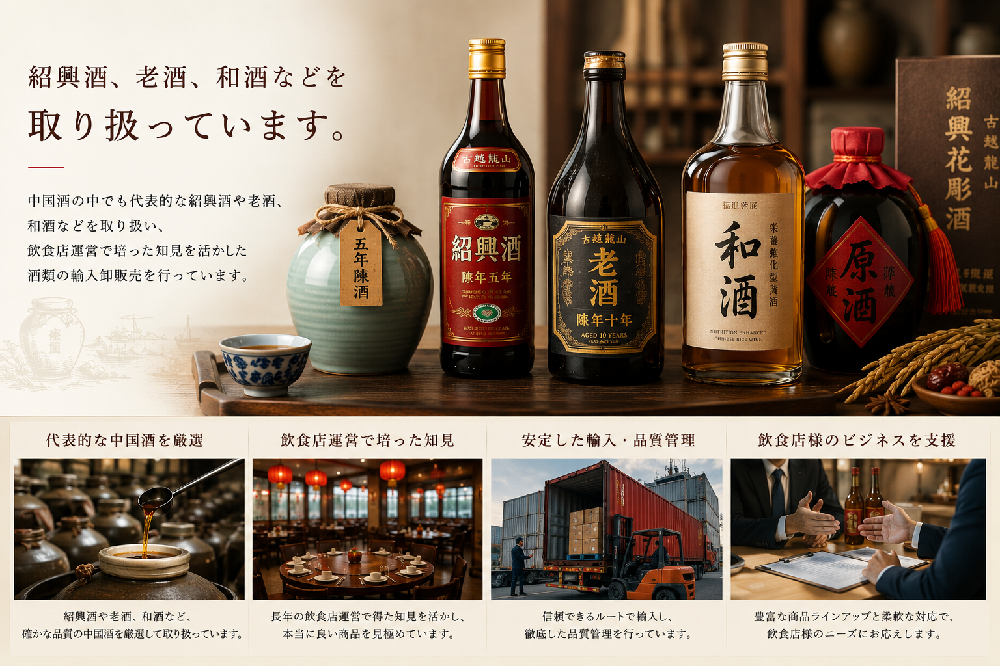
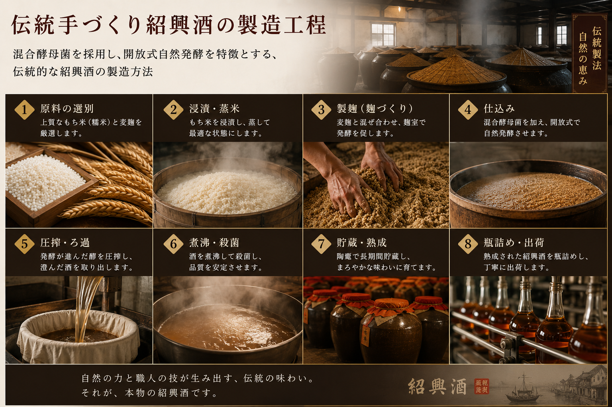
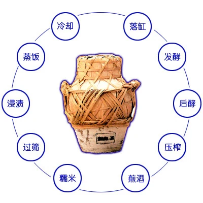
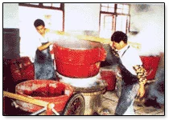
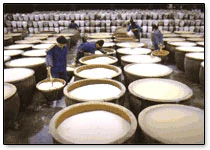
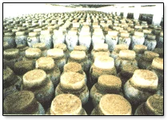

紹興酒、老酒、和酒などを取り扱っています。
中国酒の中でも代表的な紹興酒や老酒、和酒などを取り扱い、飲食店運営で培った知見を活かした酒類の輸入卸販売を行っています。
酒類輸入卸
飲食店運営で培った知見を活かし、中国酒の輸入卸販売を行っています。
中国酒の中でも代表的な紹興酒や老酒、和酒などを取り扱い、飲食店運営で培った知見を活かした酒類の輸入卸販売を行っています。


Shaoxing Wine
聖塔牌紹興酒は、良質なもち米を原料とし、紹興地方の鑑湖の天然水を用いて天然醸造される紹興酒です。
数年以上にわたり熟成された、伝統的な中国酒として紹介されています。

Traditional Process
混合酵母菌を採用し、開放式自然発酵を特徴とする、伝統的な紹興酒の製造方法として紹介されています。

Chinese Liquor
中国酒には、白酒、黄酒、ビール、果実酒、薬酒などさまざまな種類があります。
黄酒の中でも特に熟成されたものは老酒と呼ばれます。その中でも紹興でつくられたものは紹興酒として知られています。
和酒は上海でつくられる老酒の一種として紹介されています。
Hejiu
和酒は五年物の陳年酒をベースに、アミノ酸やビタミンなどの成分を加えた栄養強化型黄酒として紹介されています。
赤みを帯びた深い黄色の酒液と、すっきりとした口当たり、ほのかな甘みが特徴です。
原料の仕込みから発酵、熟成まで、伝統的な紹興酒づくりの流れを整理して紹介します。

原料、発酵、熟成までの流れを示す工程図です。

もち米などの原料を用いた伝統的な仕込み工程です。
甕を用いた発酵・熟成の様子を伝える画像です。

開放式自然発酵を特徴とする製造方法として紹介されています。

長い時間をかけて熟成される、伝統的な中国酒の工程です。
紹興酒・中国酒の輸入卸販売に関するお問い合わせはこちらからご連絡ください。